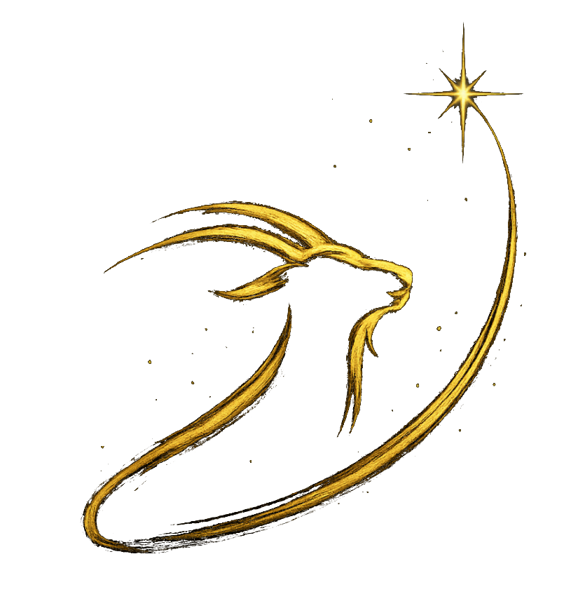

Planifica tus sesiones de astrofotografía y observación con NightVis, una herramienta de previsión meteorológica diseñada específicamente para astrónomos. Consulta la cobertura de nubes, el seeing, la transparencia, la humedad y la fase lunar hora a hora para tu ubicación.